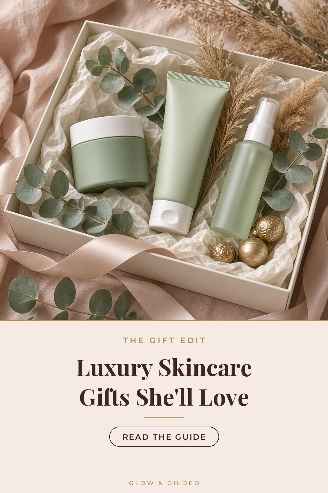

The Gift Edit
The Luxury Skincare Gift Guide: 5 Splurges She'll Actually Use
Disclosure: As an Amazon Associate we earn from qualifying purchases. Some links on this site are affiliate links, which means we may earn a commission at no extra cost to you.

The best beauty gifts are not the ones that look pretty under the tree and then sit in a drawer. They are the ones that quietly become part of someone's day: the cleanser she reaches for every night, the cream she rations because she loves it. This guide is built around that idea. Every pick below is a genuine luxury, has thousands of real buyer ratings behind it, and was in stock on Amazon when we checked.
How to choose a skincare gift
- Pick a texture, not a promise. Most people know whether they like rich balms or light gels. If you're unsure, a cleanser or lip treatment is the safest choice, because almost everyone uses one.
- Avoid strong actives for surprise gifts. Retinoids and acids are personal; save them for someone who has asked for them.
- Think about fragrance. Several premium lines are lightly scented. If she has sensitive skin, look for fragrance-free versions.
The edit
ELEMIS Pro-Collagen Cleansing Balm
The gift that converts people to cleansing balms. It starts as a solid balm, melts into an oil as you massage, then turns milky when you add water, taking long-wear makeup and sunscreen with it. The aromatherapy-style scent makes the nightly cleanse feel like a facial. A beautiful 'first luxury' for someone who has never splurged on skincare.
View on AmazonELEMIS Pro-Collagen Marine Cream
ELEMIS's best-known moisturizer: a lightweight gel-cream with marine algae that sits nicely under makeup. It is the kind of product people buy for themselves once and then keep repurchasing, which is exactly what makes it a good gift. Pair it with the cleansing balm for a complete morning-and-night set.
View on AmazonSlip Pure Silk Queen Pillowcase (Black)
A silk pillowcase is the gift people love but rarely buy for themselves. Slip uses heavy 22-momme mulberry silk, which glides rather than tugs, so hair stays smoother and night creams stay on the face instead of the pillow. Queen size with a hidden zipper; black hides makeup marks.
View on AmazonLANEIGE Lip Sleeping Mask (Berry)
The best stocking stuffer in beauty. A rich overnight lip mask with shea and murumuru butters that leaves lips soft by morning. It's an easy add-on to any bigger gift, and at its price it's a nice way to try a premium brand.
View on AmazonELEMIS Pro-Collagen Night Cream
For the person who loves a rich cream. This is the heavier, nighttime partner to the Marine Cream, with a thick balm-like texture that suits dry or mature skin, especially in colder months.
View on AmazonWrapping it like a luxury gift
Skincare gifts look most considered when presented as a ritual. Tuck the products into a soft towel or a small basket, add a handwritten card with the order to use them (cleanse, moisturize, lip mask last), and finish with a ribbon. It turns a few jars into an experience.
Prices and stock change quickly in gifting season, so check the current listing before you buy. If an item has sold out, we'll swap in an alternative when we update this guide.